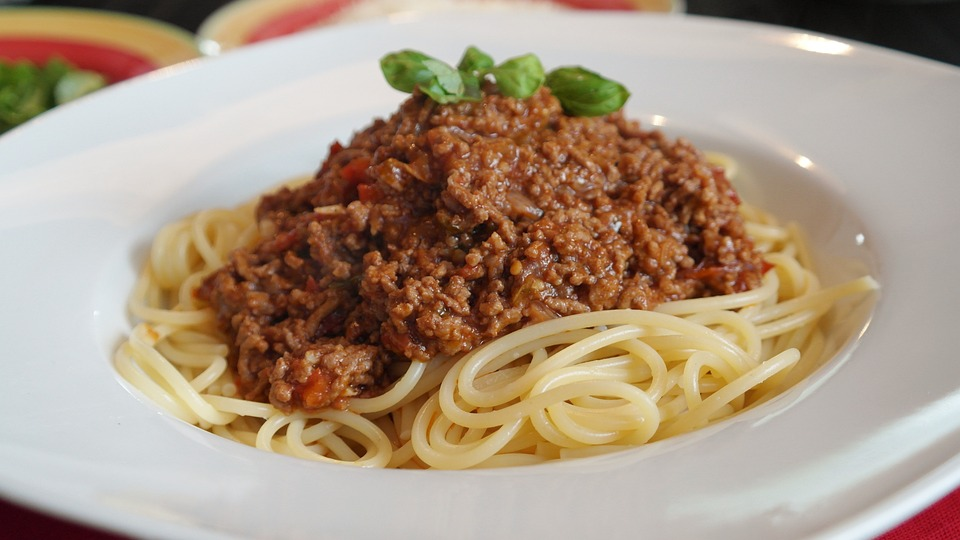

A traditional italian ragu that can be served with pasta or baked into a lasagne.

Ingredients
For the soffrito:
- 1 large onion
- 1-2 medium carrots finely chopped
- 1-2 stalks celery finely chopped
- 100g diced pancetta
- 2 Tbs olive oil and 1Tbs butter
followed by:
- 500g ground beef
- 500g ground pork
- 200 ml red or white wine, or dry white vermouth
- 2 Tbs. tomato puree
- 500 ml beef stock
- salt and pepper to taste
Method
- Place a good sized pan over a medium-low heat and add the oil and butter. Once the oil has heated and the butter begins to foam, add the onion, celery, carrots and pancetta. Allow these to gently sweat for up to 10-15 minutes, until the onion has softened and become translucent.
- Once the soffrito has softened, add the meat and begin to brown. Once browned all over, increase the heat and add the wine, or vermouth, deglazing the pan.
- Once the wine, or vermouth, has mostly evaporated add the tomato paste and a little stock and stir through the meat and soffrito. Add a pinch of salt and pepper to taste.
- Reduce the heat to low and simmer over a low heat for about 1 1/2 - 2 hours, checking throughout and adding stock as required to prevent the sauce from drying out. Taste, further seasoning as needed.
- Once done, serve the ragu with pasta of your choice, or use in a Lasagne, such as our classic beef lasagne.
The sauce can be made in advance and left in the fridge overnight as this can improve the flavour. Leftovers can be frozen.